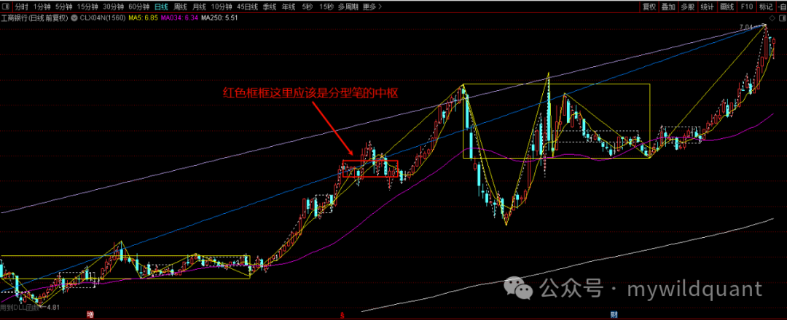
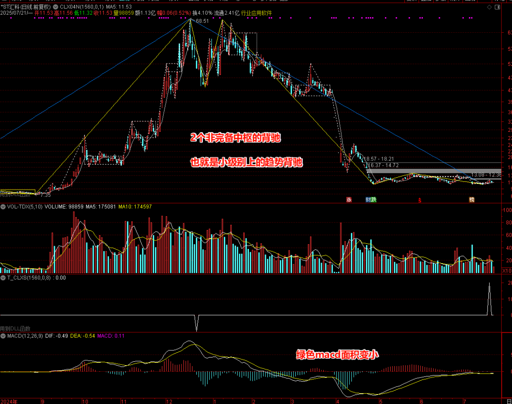
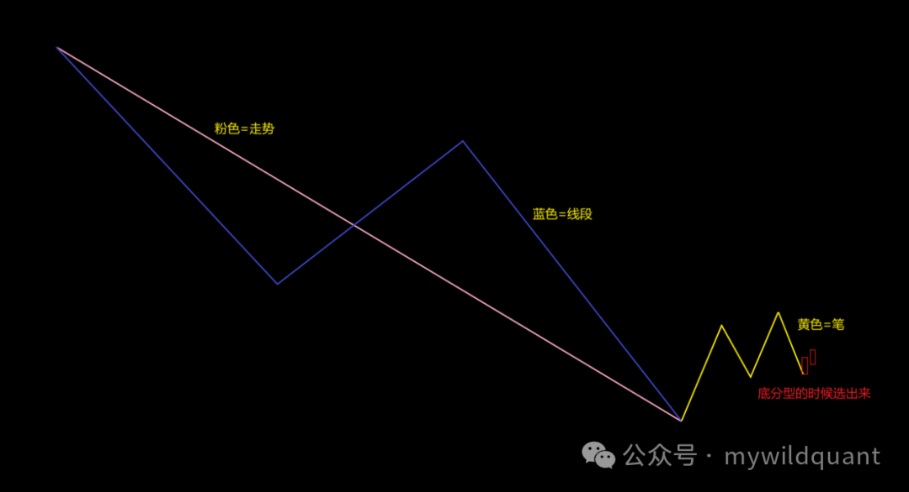
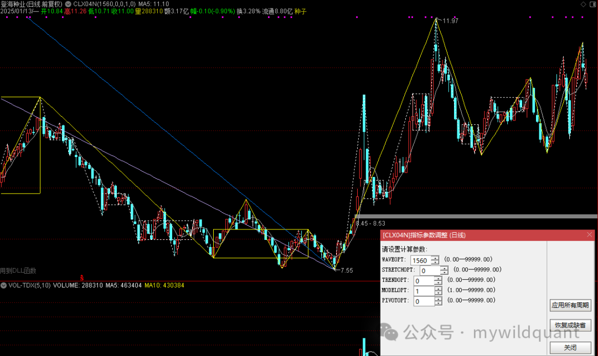
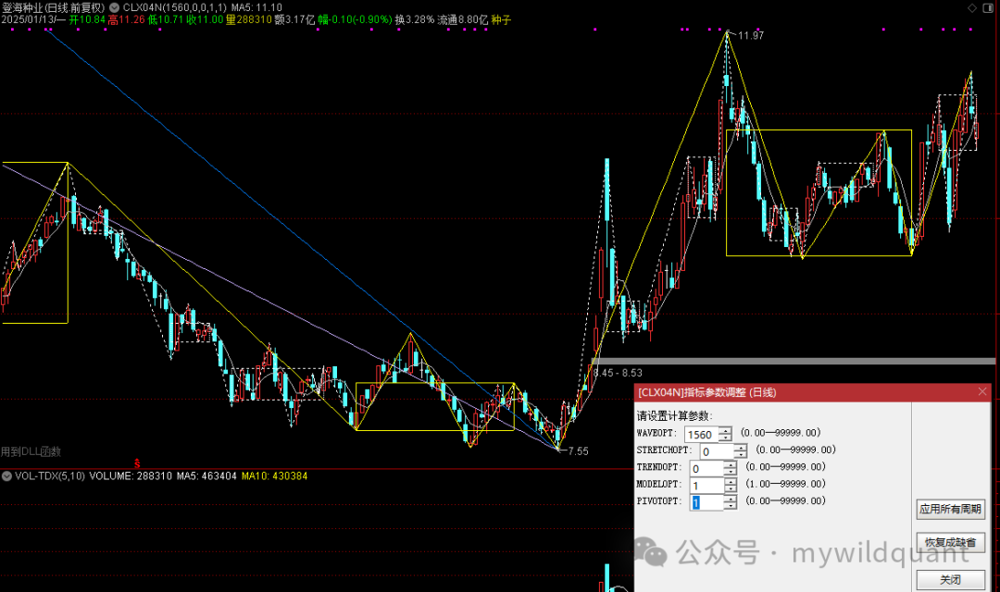
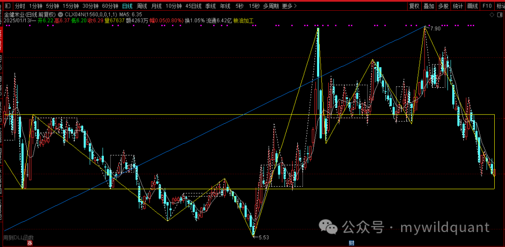
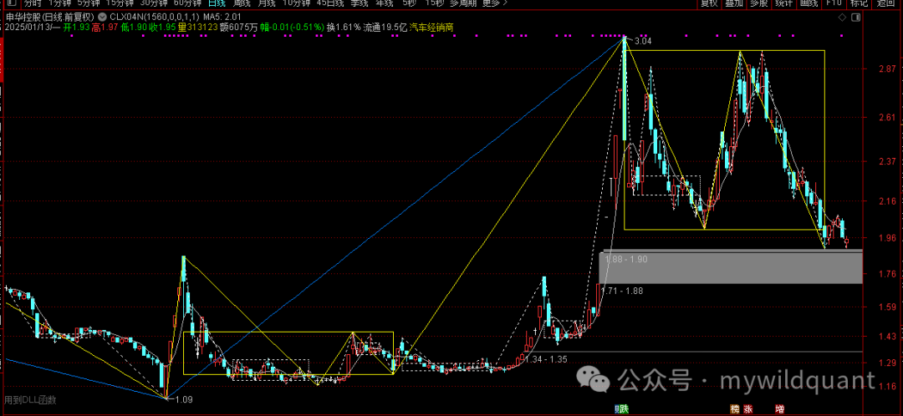
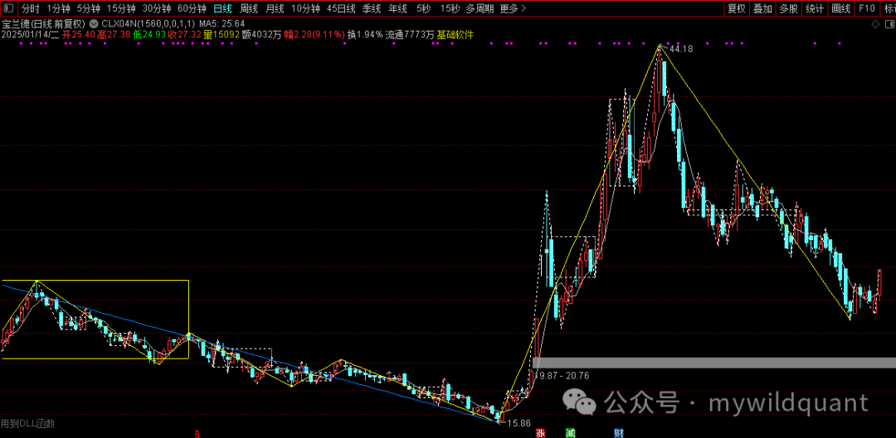
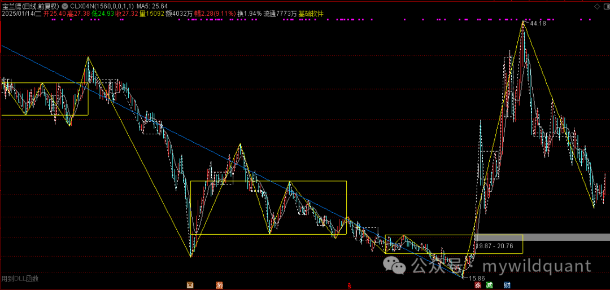

中枢：划分与画法¶
适用范围：本文描述 fqchan04 内核的划分实现。fqchan01 有独立的包含与分型文档，fqchan05（均线笔、子浪）与 fqchan06（极简分笔）的实现差异见各自插件文档。
中枢是缠论结构体系的第三层构件。《K线预处理》解决了 K 线的包含关系与分型，《笔》解决了什么是笔，《线段》解决了线段的划分，本章解决「笔和线段重叠出来的那个箱子怎么划」。中枢往上承接走势类型（《走势类型》），往下承接买卖点（fqcopilot 的《买卖点：一二三类的判定》），是整个体系中使用频率最高的结构单元。
本章回答四个问题：中枢如何定义与划分、以什么级别构造、什么条件下算完备、当下走势未完成时中枢怎么画。
中枢的定义：ZG、ZD 与三段重叠¶
中枢是价格反复重叠震荡的区域。构造规则：
取三个连续的次级别单位（笔或线段），若它们的价格区间存在公共重叠部分，中枢即成立。
- ZG（中枢高点）：重叠区间的上沿，取进入中枢后前两个次级别单位高点中的较小者，即
ZG = min(g1, g2) - ZD（中枢低点）：重叠区间的下沿，取两者低点中的较大者，即
ZD = max(d1, d2) - 中枢区间为
[ZD, ZG]，要求ZG > ZD——重叠部分非空，中枢才存在
第三个单位只要与 [ZD, ZG] 有重叠，中枢成立；此后每一笔（段）只要仍与该区间重叠，中枢延伸，区间不重算。一旦离开段脱离区间不再回来，这个中枢就走完了。
落到实现层面，中枢的定位函数 locate_pivots 在一段趋势内部工作，由相邻线段端点的高低点重叠配对生成中枢：向上段中扫描 +1/-1 端点配对，向下段中扫描 -1/+1 配对，构造方式镜像相反。
std::vector<Pivot> locate_pivots(..., int direction, int i, int j) {
std::vector<Pivot> pivots;
if (direction == 1) {
// 向上段：扫 +1/-1 配对成中枢
} else if (direction == -1) {
// 向下段：扫 -1/+1 配对成中枢
}
return pivots;
}
两个工程细节值得记住：
- 方向参数只认方向，不认强度。
direction形参只识别+1（向上）/-1（向下）两个值。 - 中枢找到后，突破判定只是一行比较：
close > zg——收盘价站上中枢上沿，即为对该中枢的突破。
中枢的构造级别¶
中枢以哪个级别的单位重叠而成，就是哪个级别的中枢。番茄缠论插件中画出的中枢分三种：
| 类型 | 构造单位 | 典型用途 |
|---|---|---|
| 笔中枢 | 笔 | 段内结构、买卖点定位 |
| 段中枢 | 线段 | 走势内部结构、背驰对比 |
| 分型中枢 | 分型（一笔之内） | 小级别观察，密度最高 |
笔中枢与段中枢¶
走势由线段组成，线段由笔组成（《线段》）。段中枢服务于走势级别的判断——数出走势里有几个中枢、是什么走势类型；笔中枢服务于更精细的定位——例如选股模型 S0001 用的就是笔中枢：在走势最低点右侧完成的那个笔中枢。级别混用是划分混乱的常见根源，先问「这是以什么为单位重叠出来的」，再使用中枢结论。
分型中枢¶
插件中用白色虚线画出的中枢是分型中枢。它的划分原则收敛为一句话：分型中枢在一笔当中划分，不跨笔——跨笔的重叠是笔中枢的职责。
早期版本曾出现应画出的分型中枢漏画的情况，边界不清晰正是根源；确立「一笔当中划分」的原则后，分型中枢的划分稳定下来。下图中红色方框处应当存在一个分型中枢：

中枢完备判定¶
「完备」是对中枢状态的关键判定，也是番茄选股体系的原生概念。
完备中枢：重叠结构已经走完成立的中枢。工程表述：在走势的最低点（或最高点）往右，走出并完成一个中枢——以笔为单位重叠即「笔中枢完备」，以段为单位重叠即段中枢完备。
非完备中枢：可以理解为当前级别图上看到的、小级别上的中枢。例如下-上-下三段中，把中间的上称为非完备中枢——它有重叠的形态，但在当前级别上没有完成完整的重叠结构。

完备与否不是对错之分，而是使用口径之分：
- 一个中枢的背驰，要求该中枢必须完备；
- 两个及以上中枢的背驰，不要求每个中枢都完备——两中枢背驰可以由「一个完备中枢 + 一个非完备中枢」组成。
「中枢完备」最典型的应用是选股模型 S0001，它是走势、线段、笔三个级别联立的样本：
- 先是一个下跌走势类型，至少 3 个线段组成（5 个及以上亦可）；
- 在走势的最低点往右走出并完成一个笔中枢——此时称「笔中枢完备」；
- 在最后一笔下跌形成底分型的时候选出。

未完成走势的中枢画法：PIVOTOPT¶
划分有静态与当下两副眼镜。
静态（复盘）视角：中枢划分在线段或走势的内部，一个中枢不横跨两个段或走势。
当下（看盘）视角：走势最右端永远是不完整的。新线段尚未成立时，这段处于过渡中的走势（中阴阶段）里有没有中枢？默认口径下答案永远是「不画」，但看盘时往往需要提前预判反向结构。
插件为此提供参数 PIVOTOPT，由使用者自行决定开或关：
- PIVOTOPT = 0（默认）：中枢必须在段内或走势内。新线段未成立的部分不画中枢。下图中 7.55 之后的笔尚未成立新的线段，后半段不会画中枢。

- PIVOTOPT = 1：中枢可以横跨线段，或提前画出反向中枢。三种典型场景：
场景一：最后一笔之后新线段尚未成立，但反向重叠已具雏形——提前画出反向中枢：

场景二：中枢横跨线段边界，向右继续延伸：

场景三：向下线段未确立前，临时画上向上中枢：

必须强调：PIVOTOPT = 1 是当下辅助选项，服务于看盘时对未完成段的结构预判。开启后画出的中枢是临时的，可能随后续划分修正；复盘口径下的划分规则不受影响。该参数在通达信、大智慧、金字塔、KT 端均可用。
最后中枢的跨段画法¶
「最后中枢」指当下走势中最近的一个中枢。开启 PIVOTOPT = 1 后，最后中枢的跨段延伸是单独打磨过的一处画法：当走势末端的反向运动跨过线段边界时，最后中枢应跟随实际的重叠向右延伸画出，而不是停在段的边界上。


上图是期望达到的效果：最后中枢不再受段边界截断，完整覆盖跨段的实际重叠区域。
中枢与走势类型的衔接¶
中枢划出来之后，走势类型的判定就是数中枢（详见《走势类型》）：
- 走势类型内部只有一个中枢——盘整；
- 同方向两个及以上依次排列的中枢——趋势。
中枢个数同时进入信号编码：信号值 8207 表示「8 号模型检测到 2 个中枢的下跌背驰，MACD 金叉确认买入」；背驰模型 CLXS0008 输出 101 / 201 / 301，分别代表 1 个、2 个、3 个中枢的背驰（卖点为 -101 / -201 / -301）。
中枢还是买卖点判定的锚。三买的经典定义是趋势中第一个中枢的突破——强调「第一个」，因为第一个中枢代表趋势确立时的初始震荡区，突破它意味着趋势进入加速段。工程口径随语义分化：
| 场景 | 口径 |
|---|---|
| 买点 + 向上趋势（顺势） | 严格：趋势内中枢必须恰好为 1 个 |
| 买点 + 向下趋势（逆势） | 维持：取最后一个中枢 |
| 卖点 + 向下趋势（顺势） | 严格：趋势内中枢必须恰好为 1 个 |
| 卖点 + 向上趋势（逆势） | 维持：取最后一个中枢 |
不对称是有意的：严格三买只在顺势时有意义，逆势买点本就是另一类信号（左侧抄底），不该套用三买的严格定义。顺势 guard 锁定中枢唯一后，「第一个中枢」与「最后一个中枢」是同一个，取值统一为最后一个即可：
// 向上趋势严格三买：要求 trend 内中枢数量恰为 1
if (trend_dir == 1 && pivots_num != 1) {
inner_result[signal_pos] = 0;
return;
}
// 通过 guard 后，取中枢、比收盘价
const Pivot last_pivot = pivots[pivots_num - 1];
if (close[signal_pos] > last_pivot.zg) {
inner_result[signal_pos] = reencode(original_signal); // 保留信号
} else {
inner_result[signal_pos] = 0; // 取消信号
}
背驰的对比同样以中枢为基准：比较进入中枢的一笔与离开中枢的一笔的 DIFF 值或 MACD 累积值，在 MACD 金叉或死叉时做判断（详见fqcopilot 的《买卖点：一二三类的判定》）。
常见误区¶
误区一：把「重叠」理解得太严。 中枢只要求高低点区间的公共部分非空（ZG > ZD），不要求三段价格幅度接近。哪怕只有一点重叠，中枢即成立并可能延伸。
误区二：分型中枢跨笔划分。 分型中枢必须在一笔当中划分。跨笔去凑重叠，得到的既不是分型中枢也不是笔中枢，是划分混乱。
误区三：把非完备中枢当成划分错误。 非完备中枢是当前级别图上看到的小级别中枢，有明确用途（参与两中枢背驰的组成），不是 bug。判读时先分清完备与否，再套用对应口径。
误区四：多中枢趋势里取最后一个中枢当三买。 向上趋势积累了多个中枢时，取最后一个判断的已经是第三、四个中枢的突破，偏离「第一个中枢突破」的经典定义。顺势场景应严格要求中枢恰为 1 个。
误区五：给只认方向的函数传带强度的方向值。 分析结果中的趋势方向是浮点数：±1.0 表示当前有效的趋势终点，±0.5 是被新走势覆盖后的历史终点降级标记。若把 ±0.5 直接传给 int 形参的 direction，C++ 向零截断使其塌缩为 0——两个分支都进不去，函数静默返回空中枢列表，信号凭空消失且无任何报错。最危险的 bug 不崩溃，只是悄悄返回空。修复模式：跨类型边界传值前，先把值规范化到目标类型的有效值域——方向只看符号。
const int trend_dir = (trend_direction > 0) ? 1 : -1;
用法¶
公式端（股软）¶
中枢的画法参数与选股调用分属两个插件：fqchan04 负责划分与画线，fqcopilot 负责选股。
fqchan04 的 PIVOTOPT 参数控制未完成走势的中枢画法（0 = 段内，1 = 允许跨段与反向中枢），在公式参数面板中设置。
fqcopilot 的全部选股操作通过三个函数完成：一号函数重置内部数据结构，二号函数传入参数数据，三号函数触发计算并返回信号。参数代号表：
| 参数类型 | 代号 | 说明 |
|---|---|---|
| HIGH | 1 | 最高价 |
| LOW | 2 | 最低价 |
| OPEN | 3 | 开盘价 |
| CLOSE | 4 | 收盘价 |
| WAVE | 20 | 笔的端点 |
| STRETCH | 30 | 段的端点 |
| TREND1 | 40 | 走势的端点 |
通达信端以 S0001（中枢完备）为例：
WAVE:=TDXDLL4(2,H,L,0);
STRETCH:=TDXDLL4(3,WAVE,H,L);
TREND1:=TDXDLL4(4,STRETCH,H,L);
RESET:=TDXDLL7(1,0,0,0);
IGN1:=TDXDLL7(2,HIGH,1,0);
IGN2:=TDXDLL7(2,LOW,2,0);
IGN3:=TDXDLL7(2,OPEN,3,0);
IGN4:=TDXDLL7(2,CLOSE,4,0);
IGN5:=TDXDLL7(2,WAVE,20,0);
IGN6:=TDXDLL7(2,STRETCH,30,0);
IGN7:=TDXDLL7(2,TREND1,40,0);
SIG:=TDXDLL7(3,1,0,0);
BUY_OPEN:SIG=1;
大智慧端的写法更直观，缠论结构由 fqchan04 的公式接口给出，再交给 fqcopilot 计算：
WAVE:="fqchan04@BI";
STRETCH:="fqchan04@DUAN1VAR"(WAVE);
TREND1:="fqchan04@DUAN1VAR"(STRETCH);
RESET:="fqcopilot@RESET";
IGN1:="fqcopilot@SETPARAMVAR"(HIGH,1);
IGN2:="fqcopilot@SETPARAMVAR"(LOW,2);
IGN3:="fqcopilot@SETPARAMVAR"(OPEN,3);
IGN4:="fqcopilot@SETPARAMVAR"(CLOSE,4);
IGN5:="fqcopilot@SETPARAMVAR"(WAVE,20);
IGN6:="fqcopilot@SETPARAMVAR"(STRETCH,30);
IGN7:="fqcopilot@SETPARAMVAR"(TREND1,40);
SIG:="fqcopilot@CALC"(1);
BUY_OPEN:SIG=1;
S0001 放在日线上选股，每天选出的标的并不多，选出后放入股票池观察即可。
Python 端¶
S0001 已集成到 python，可在 python 中直接调用，用于形态回测、每日自动生成股票池等后续流程。python 侧拿到的信号值是编码后的数字，解读时注意中枢个数编码在中：
8207= 8 号模型，2 个中枢的下跌背驰，MACD 金叉确认买入；101 / 201 / 301= 1 / 2 / 3 个中枢的背驰（负值为卖点）。
信号脱离 K 线就是一串抽象编码，看不出它出现在什么位置、当时的走势结构是否合理。FreshQuant 的 freshquant/chart/chanlun_chart.py 每天生成四大指数的缠论结构标注图，把 18 个模型的信号直接标在结构图上——每天看一眼，信号频繁出现在不合理位置，就回去调整模型的参数与判定逻辑。这个人工校准的反馈闭环，是中枢类模型持续迭代的基础。
知识来源¶
- 《量化兵器库之选股S0001，今天是第一次发布选股公式，缠论中枢完备，发布fqcopilot-v20240512》（2024-05-12）
- 《S0001中枢完备形态选股更新，集成到python中，支持在python中调用S0001》（2024-08-17）
- 《发布fqchan04-2024.12.27，优化分型中枢的划分》（2024-12-27）
- 《发布fqchan04-2025.01.13，增加参数选项可配置当下未完成走势的中枢画法》（2025-01-13）
- 《发布fqchan04-2025.01.15，继续更新升级最后中枢的跨段画法》（2025-01-15）
- 《缠论CLXS0008模型更新》（2025-07-22）
- 《FreshQuant量化（把信号K标记出来，每天看一眼，有问题立刻校准）》（2026-05-26）
- 《FqCopilot缠论插件（被静默吞没的信号）》（2026-07-27）